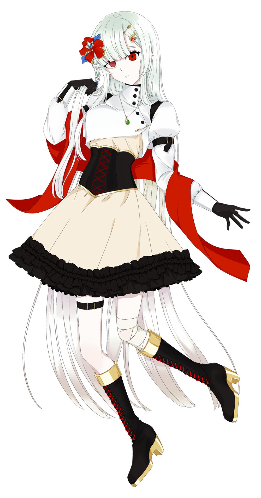

好き
誰かが剥いてくれるりんご、さくらんぼ、洋菓子と和菓子。
VTUBER / VSINGER / CONCEPTUAL ENTITY
江縫栄市立総合病院1000号室
GAINE NULL がいね ぬる
世界の外から
ごきげんよう〜

OBSERVATION SUBJECT / NULL
INTRODUCTION / 自己紹介動画
ABOUT / 自己紹介
とある病院の10階、個人室に暮らしている無頓着そうな子。
外に出ることは難しく、ずっとこうしてただ生かされているだけだと思っていた。
本当は概念体だから、生きるも死ぬもそんな重要ではないのに。
世界の孔か、何かの鏡か、どっちかね。何かの空白。
でも中身は少し風変わり。せっかちだし、ずっと病床にいて退屈！
だから「人がいない時だけでも」着替えて遊ぶぞ！
常に世界の外にいるから、0から始めるのだ！
PROFILE DATA / 基本情報
DETAILS / もう少し詳しく
誰かが剥いてくれるりんご、さくらんぼ、洋菓子と和菓子。
音域 B2–C♯6。得意なところは C4–A5。
DEVICES / 制作・配信環境